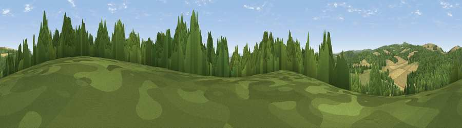

Viewpoint near Houghton
#26048 in England · top 55% of its area beats it · near HoughtonWhere it is
The exact computed spot (SU 99725 09925). Click the marker for map links.
The view, rendered

A 360° render of this exact spot computed from the terrain model, tree cover and land cover — summer colours, afternoon light, calibrated against photographs of famous viewpoints. Real trees, hedges and buildings will differ in detail.
The panorama
Grey silhouette: terrain skyline in each direction (720 bearings, Earth curvature and refraction included). Dashed green: skyline with trees (+15 m) and buildings (+8 m) as obstacles. Blue strip: how far the ground is visible on each bearing.
Where the view opens
Wedge length = distance to the farthest visible ground on that bearing (vegetation-aware). Rings at 10, 25 and 50 km.
What fills the view
48% woodland · 25% grassland · 22% cropland · 4% water · 2% built-up
Angular shares of the visible panorama (visual magnitude), not map area. Landscape diversity 0.53 (0–1 Shannon).
Key numbers
More beautiful places nearby
The staircase of upgrades: each row has a higher view potential than everything closer. Driving times are estimates from straight-line distance, calibrated against real road routing — check an actual route before setting out.
| Place | Direction | Drive | Score |
|---|---|---|---|
| Viewpoint near Houghton | E · 1 km | ~3 min | 62.7 |
| Viewpoint near Houghton | NNE · 1 km | ~4 min | 65.4 |
| Viewpoint near Bury | NNE · 2 km | ~6 min | 69.1 |
| Westburton Hill | N · 3 km | ~7 min | 84.2 |
| Bignor Hill | NNW · 4 km | ~9 min | 84.4 |
| Viewpoint near Washington | E · 14 km | ~25 min | 85.0 |
| Chanctonbury Ring | E · 14 km | ~26 min | 87.0 |
| Firle Beacon | E · 49 km | ~70 min | 88.9 |
50.88022, -0.58383 · source: screening · position refined by local search. Computed location — check access rights before visiting.